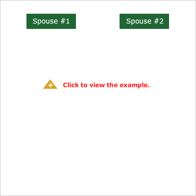
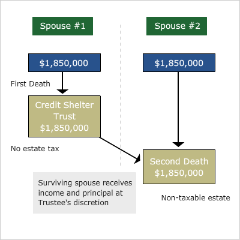

The Credit Shelter Trust (sometimes referred to as the “Applicable Exclusion Trust,” "By-Pass Trust," or "Family Trust”) became very popular as a means of utilizing the applicable credit amount when the first spouse died. Here is how it works:
-
When the first spouse dies, the Applicable Credit Amount is generally applied against as much of the estate as possible.
-
These "sheltered" assets are transferred into a "credit shelter trust."
-
The remaining assets, which are not covered by the applicable credit amount, are transferred to the surviving spouse (or, as we shall explore in the following case study, into a trust for the surviving spouse).
-
The surviving spouse generally receives income from the credit shelter trust and, if the document allows, can receive principal at the trustee's discretion.
-
The credit shelter trust can also be used for the children. For this reason, it is often referred to as a "family trust." In fact, after the death of the surviving spouse, the trust can continue for the benefit of the children.
-
Since the surviving spouse cannot control the credit shelter trust, it is not included in the surviving spouse's estate and will not be taxed upon the second death.
-
The end result is that both applicable credit amounts are utilized and the surviving spouse does not have to forego benefit of all the assets.
Credit Shelter Trust Example
|
If Joe and Martha Andrews had divided their assets equally and utilized the credit shelter trust technique in their estate planning documents, the end result would have been no estate taxes, at a savings of $90,000 (if they both died in 2009), as illustrated in the diagram on the right.
For many years, this has been one of the most powerful estate planning techniques available for couples, and its features became second nature to planners.
|
  |
|
|